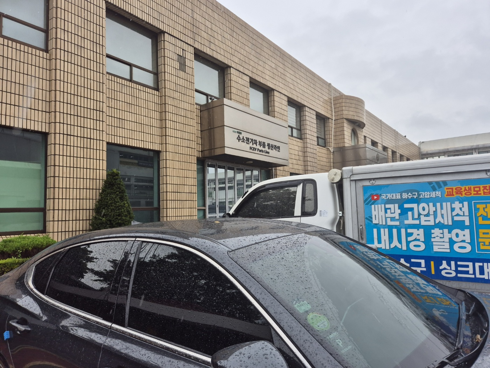
평택시 포승공단 및 산업단지 배관 준설·보수 전문 고고고설비입니다. 이번 시공 현장은 평택시 포승읍 소재 수소전기차 부품 제조 공장입니다. 우천 시 건물 뒤편 통로 배관이 막혀 우수와 하수가 배출되지 못하고 통로 전체가 침수되는 긴급 상황으로 출동했습니다.
본관과 창고 건물 사이의 좁은 외부 통로로 진입했습니다. 우수관 및 하수관 배수 불량으로 인해 통로 전체에 오수가 수심 발목 높이까지 차올라 전형적인 메인 배관 폐색 증상을 보이고 있었습니다. 우천이 지속되는 상황이라 신속한 진단과 배수 진입로 확보가 시급했습니다.
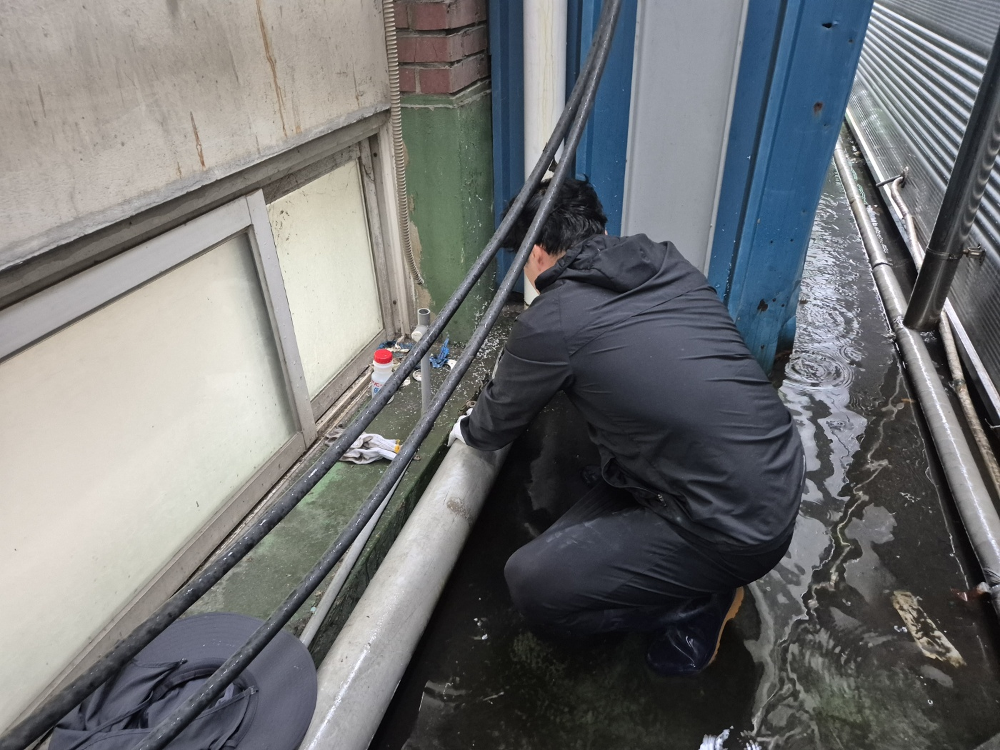
작업 안전용 장화를 착용하고 침수된 통로 내부로 직접 진입하여 배관 노선과 이음부 상태를 정밀 점검했습니다. 통로 폭이 협소하여 대형 장비의 수평 배치가 어려웠으므로 전동 플렉스 샤프트 및 소형 보수 장비를 휴대 배치하여 작업을 유도했습니다.
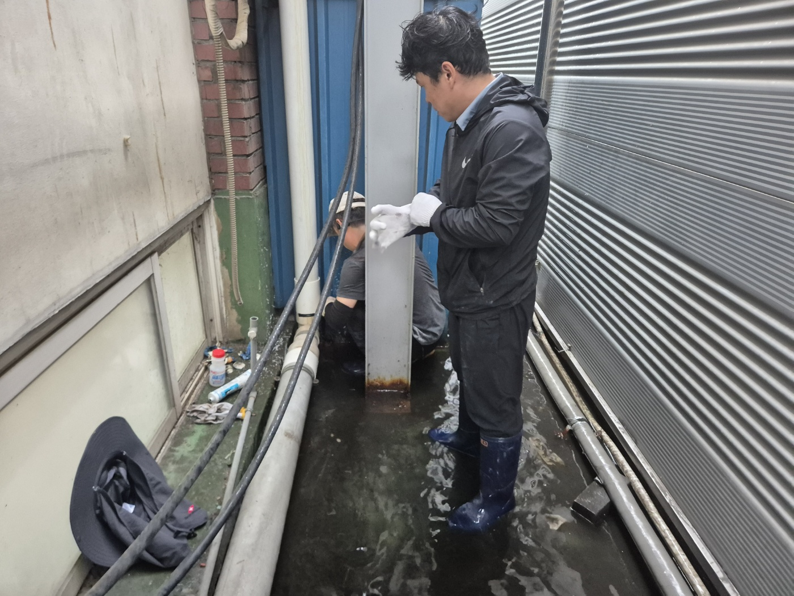
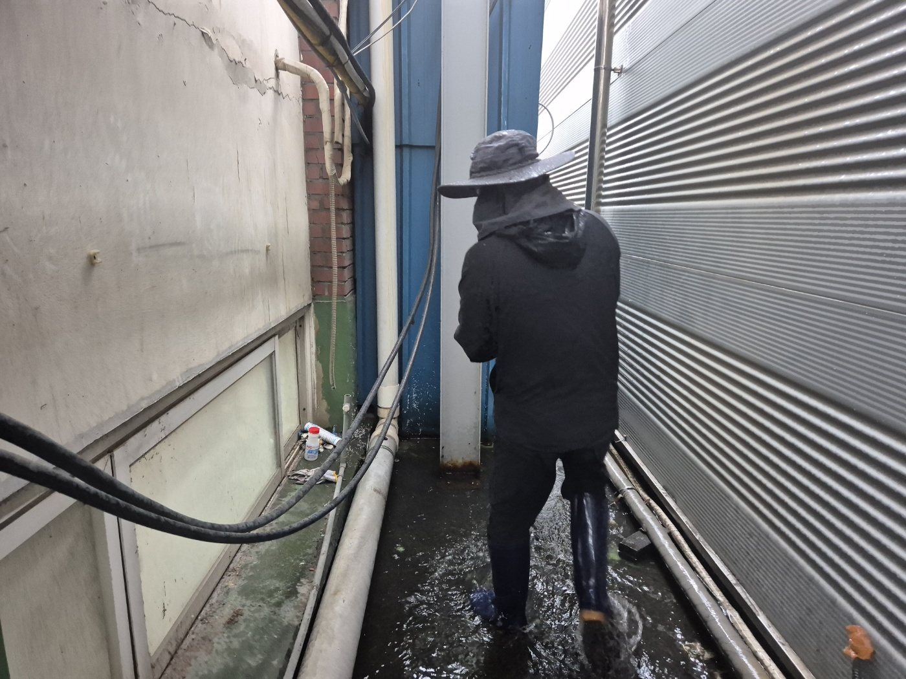
관로를 따라 정밀 진단한 결과, 노후화된 외부 PVC 배관 이음부(부속 연결관) 여러 곳이 부식되고 벌어져 있었습니다. 이음부 틈새로 고여 있던 오수가 뿜어져 나오고 있었으며, 이로 인해 관로 내부의 정상적인 배수 압력이 형성되지 못하는 복합적인 결함이 발견되었습니다.
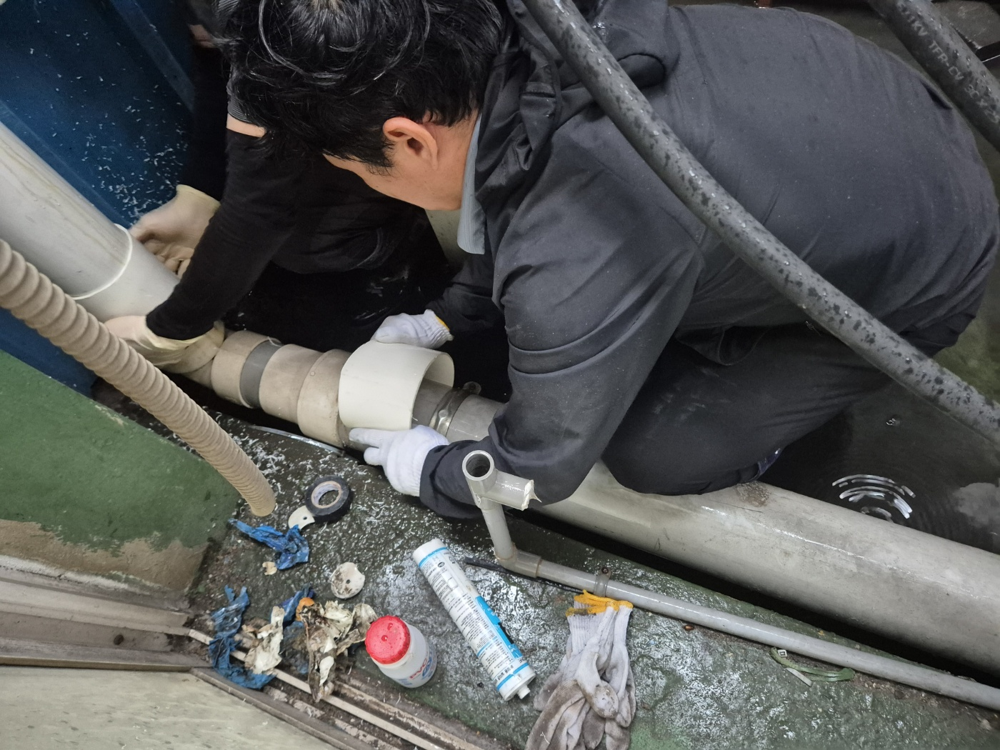
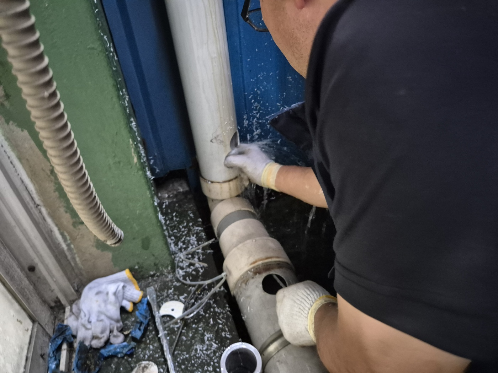
손상된 PVC 배관 이음 부위를 정밀 절단한 후 전용 프라이머 및 PVC 접착제를 사용하여 신규 배관 연결 부속으로 견고하게 교체 보수했습니다. 배관 연결부의 기밀성과 수압 견딤 성능을 확보하여 이차적인 수밀 누수를 차단했습니다.
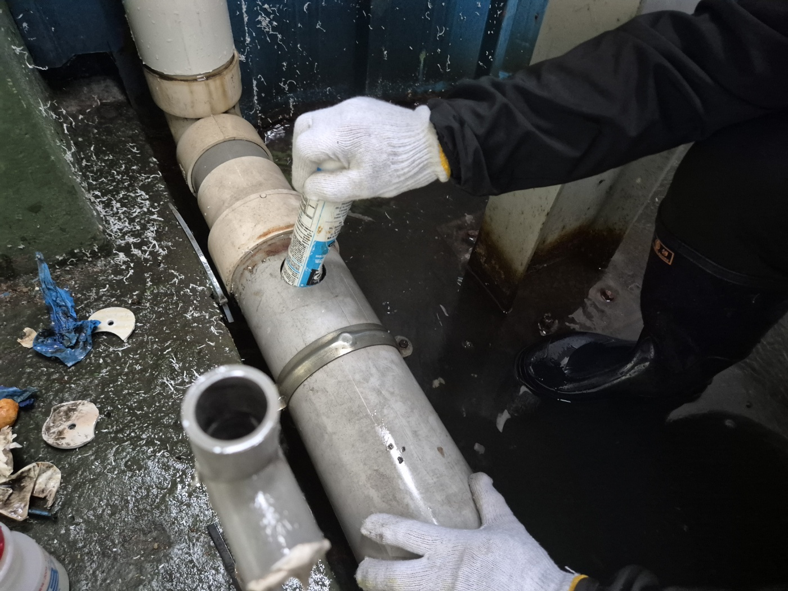
이음부 보수 후 배관 깊숙이 적체된 유기물과 토사 슬러지를 스케일링하기 위해 배관 측면에 전동 드릴을 활용하여 정밀 작업용 진입구(점검용 구멍)를 개설했습니다. 천공 즉시 관로 내부에 정체되어 있던 오수가 배출되며 내부 세척 준비가 완료되었습니다.
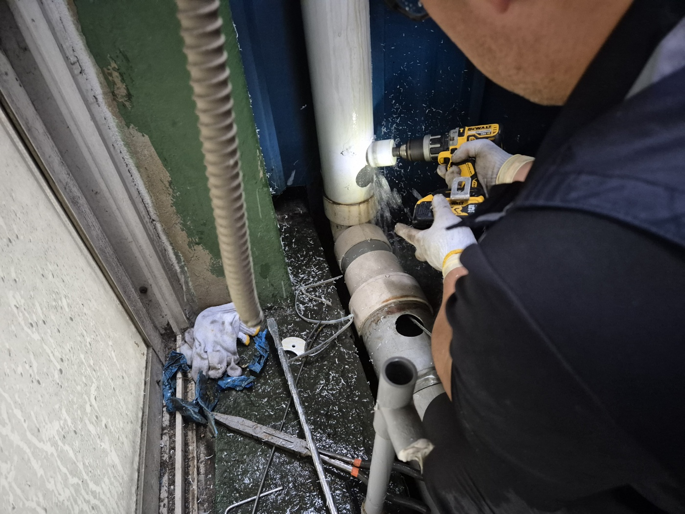
개설된 진입구로 전동 플렉스 샤프트 케이블을 투입했습니다. 고속 회전하는 체인 노즐이 배관 내벽에 굳어 있던 흙, 먼지, 슬러지 및 토사 덩어리를 강하게 분쇄했습니다. 작업 공간이 협소함에 따라 2인 1조 작업자가 샤프트 케이블의 각도를 유지하며 관로 전 구간에 대한 정밀 스케일링을 시행했습니다.
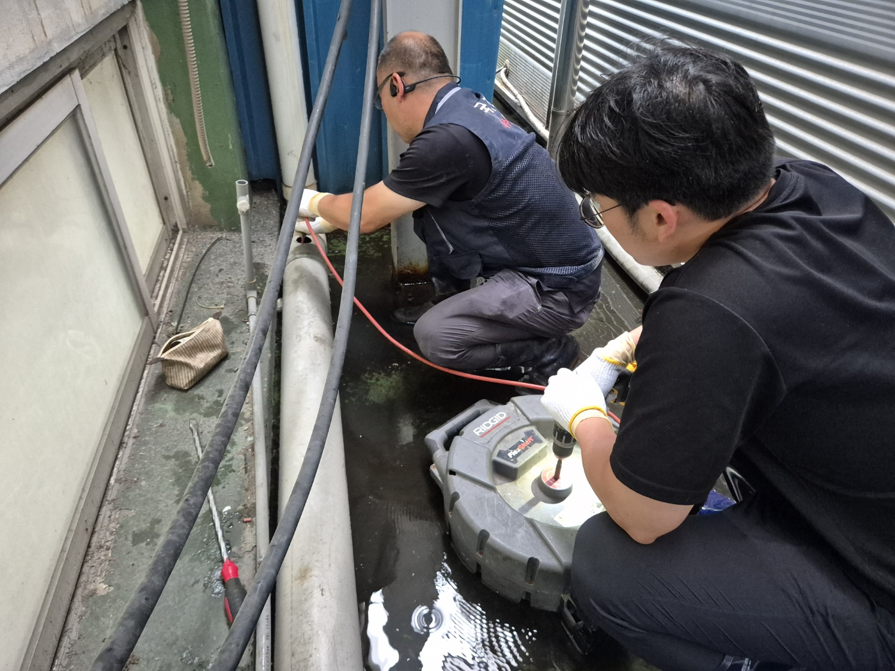
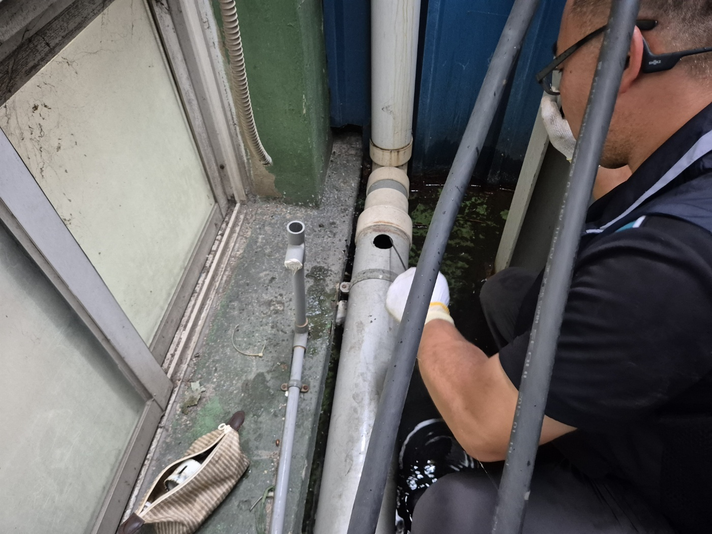
샤프트 스케일링을 통한 막힘 구간 관통 후 다량의 수량을 연속적으로 투입하여 통수 테스트를 진행했습니다. 통로에 정체되어 있던 오수가 우수관로를 따라 순식간에 빠져나갔으며, 강우 상태에서도 수위 증가 없이 원활하게 배수되는 것을 최종 확인했습니다.
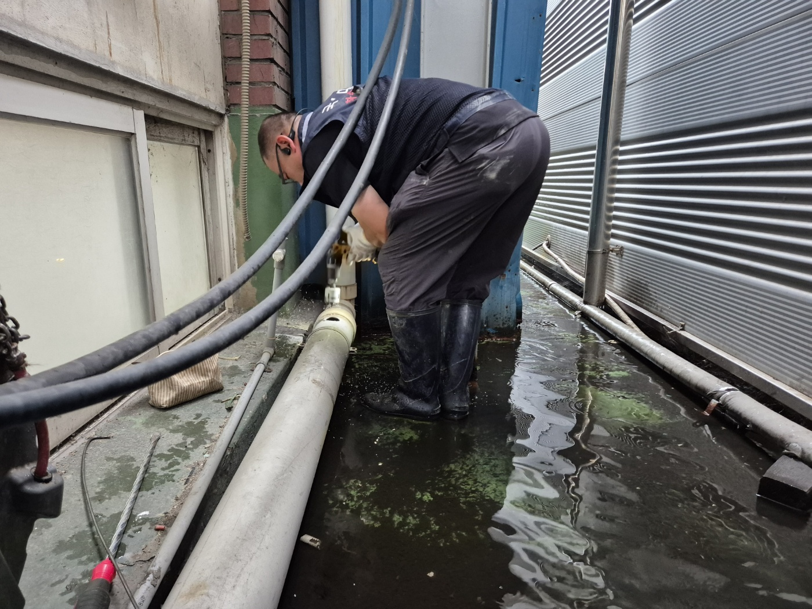
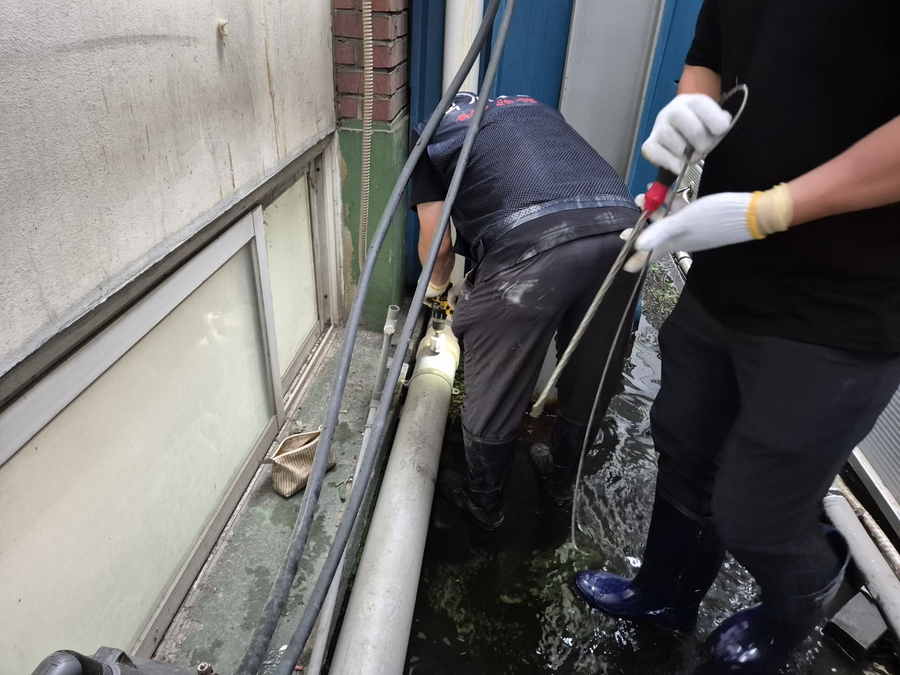
공장 및 사업장의 외부 우수·하수관은 토사, 낙엽, 잔여 산업 슬러지 등이 유입되기 쉽고 배관 노후화 시 이음부 파손으로 침수 피해가 발생할 수 있습니다. 침수로 인한 제품 및 시설물 손상을 예방하기 위해서는 정기적인 배관 이음부 수밀 점검 및 관로 고압세척·샤프트 준설을 권장합니다.
고고고설비는 공장, 상가, 아파트, 주택 등 대형 배관막힘, 우수관 역류, 노후 배관 보수를 정확한 진단과 전문 장비로 안전하게 해결해 드립니다.